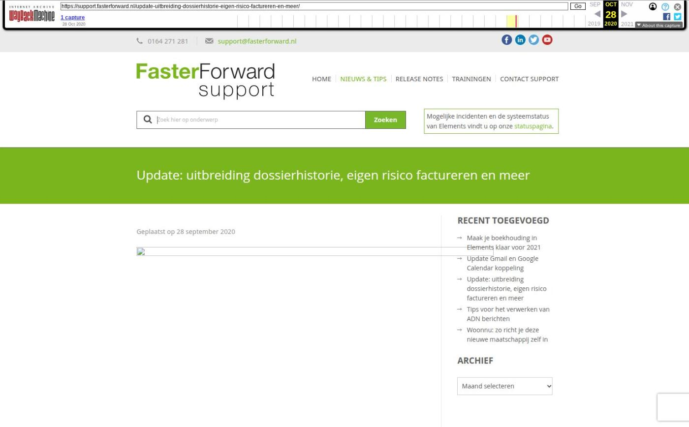

Update: uitbreiding dossierhistorie, eigen risico factureren en meer

Tekstinhoud
Geplaatst op 28 september 2020
Dossierhistorie uitgebreid
Dossier rol dubbel gevuld
SEPA bestand geoptimaliseerd
Eigen risico in rekening brengen
Incassokosten tonen bij batches
Datumfilter toegevoegd aan excasso batch
Rekening-courant deelnemers overzicht
API uitbreiding
Dossierhistorie uitgebreid
In de dossierhistorie wordt nu ook de opgevraagde informatie uit De Nationale Hypotheekbond en het RDW weergegeven.
RDW
Wanneer je in een schadeverzekering het kenteken van een auto opvoert en vervolgens klikt op ‘voertuiggegevens’ ophalen, worden alle gegevens bij het RDW opgehaald. Dit wordt vervolgens in de dossierhistorie getoond.
De Nationale Hypotheekbond
Ditzelfde geldt wanneer je via het tabblad ‘Berekeningen’ een actie uitgevoerd hebt. Zowel de woningwaarde check als het berekenen van de maximale hypotheek worden weergegeven in de dossierhistorie.
Dossier rol dubbel gevuld
Op de startpagina van een klantdossier wordt nu een melding getoond wanneer er 2 personen met de rol ‘eerste persoon’ of ‘partner’ aanwezig zijn. Eén van de personen dient dan aangepast te worden.
Hiermee voorkom je dat personen onjuiste rollen hebben. Zo werk je op de juiste manier met Elements. Dit geldt uiteraard niet voor personen met de rol ‘kind’.
SEPA bestand geoptimaliseerd
ABN AMRO stelt extra eisen aan een excasso SEPA bestand. Enige tijd geleden was dit reeds aangepast voor incasso bestanden. Hierdoor voldoen alle SEPA bestanden die aangemaakt worden in Elements nu aan de extra eisen.
Eigen risico in rekening brengen
Er is een knop “Eigen risico factureren” toegevoegd onder het tabblad “TP Incasso boekingen”.
Als je op de knop klikt, opent het onderstaande scherm.
Schade-uitkeringen worden vaak rechtstreeks door de maatschappij uitbetaald aan een derde partij. Het eigen risico dien je vervolgens nog wel in rekening te brengen bij de klant. Om dit op een makkelijke manier mogelijk te maken is hiervoor een speciale knop “Eigen risico factureren” toegevoegd. In de praktijk wordt dit ook wel een “negatieve schadeboeking” genoemd.
Let op: de boeking kan niet negatief zijn en moet in een openstaande periode geboekt worden.
Incassokosten tonen bij batches
Maatschappijen sturen soms incassokosten mee in een batch. Deze werden in Elements niet weergegeven. Hiervoor is nu een kolom toegevoegd zodat deze wél zichtbaar zijn.
Datumfilter toegevoegd in excasso batch
Indien je een rekening-courant verhouding hebt met je deelnemers, kun je in Elements een excasso genereren voor de uitbetaling. Bij het genereren van deze excasso is een datumfilter toegevoegd. Zo filter je eenvoudig op een bepaalde periode.
Rekening-courant deelnemers overzicht
In het Rekening-courant deelnemers overzicht staat een kolom ‘vergoedingen’ waar de vergoedingsgroep in getoond werd. Deze kolom is hernoemd naar ‘Type’. Hierdoor is het nu duidelijk waar de post vandaan komt.
Daarnaast is hier een filter toegevoegd met ‘Betaalbaar ja/nee’. Deze staat op ‘Ja’ wanneer de betaling van de klant binnen is, zodat de C.O. weet dat ze de deelnemer kunnen uitbetalen. Let op: deze filter is niet standaard geactiveerd. Neem contact op met support om deze te activeren.
API uitbreiding
De API is uitgebreid met de volgende velden:
Document aan kunnen merken als contractdocument
Adviseur
Dossier verantwoordelijke
Foto toevoegen onder een persoon
Consumptief krediet:
Doel van financiering
Saldo en Effectieve jaarrente
Levensverzekering
Einddatum
Annuïtair dalend percentage
Verpand aan
Categorie: Algemeen, Release